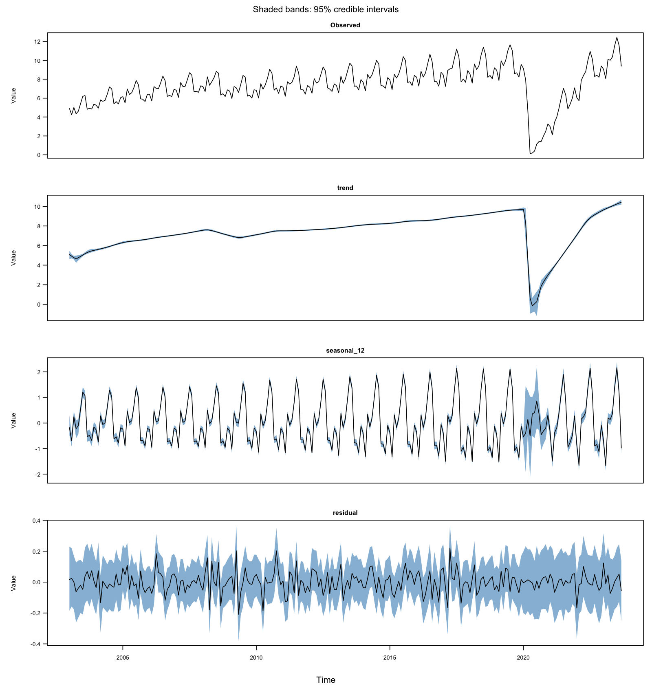
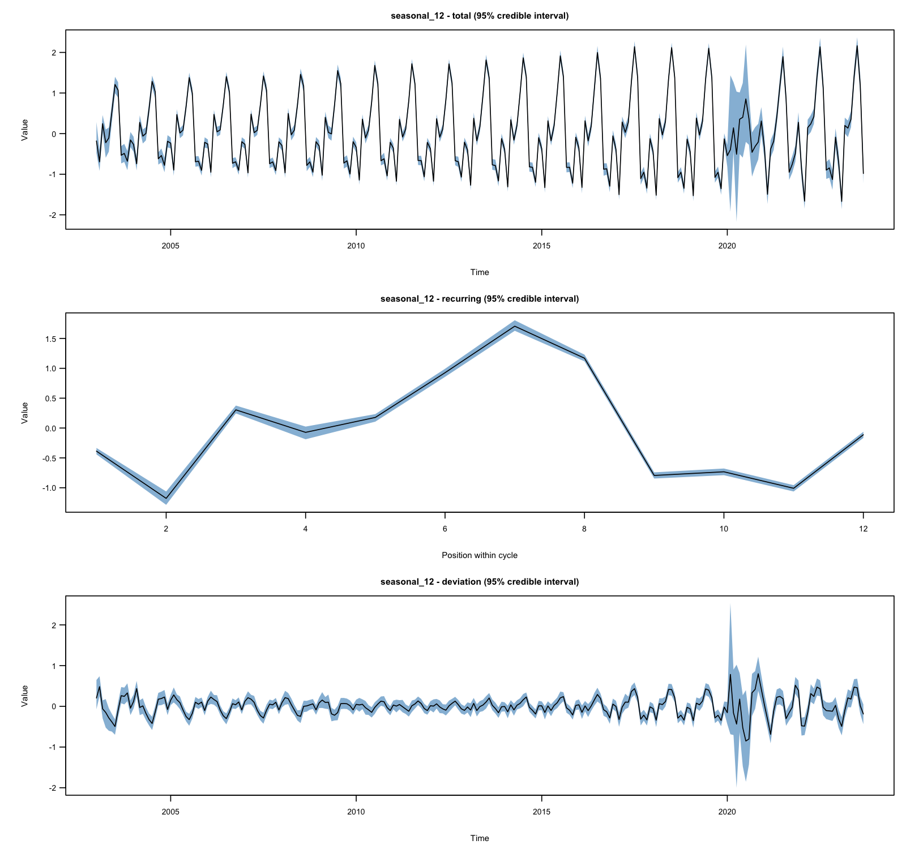
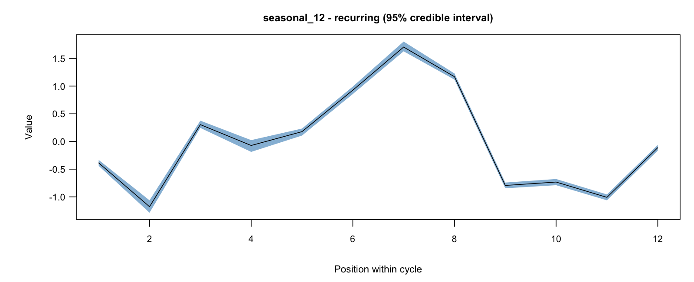
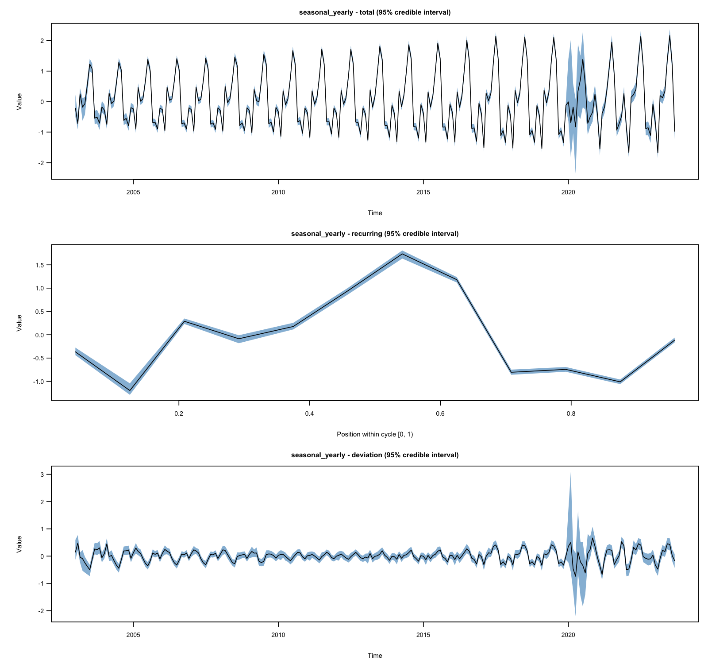

Bayesian time-series decomposition in R
BASTION is a flexible Bayesian framework for time-series decomposition. It jointly estimates locally adaptive trends and evolving seasonal patterns, supports multiple seasonalities, and provides uncertainty quantification through posterior credible intervals. Stochastic volatility accounts for heteroskedasticity, while a separate outlier component captures unusual observations.
The accompanying paper was accepted at AISTATS 2026.
Paper · Preprint · Non-technical guide · Function reference
Why use BASTION?
- Local adaptivity: accommodate smooth movements and abrupt changes in trends and seasonal patterns.
- Multiple seasonalities: estimate several recurring patterns together, such as daily and weekly cycles.
- Uncertainty quantification: obtain posterior credible intervals for the decomposition components.
- Heteroskedasticity: model changing observation variance through stochastic volatility.
- Outliers: estimate unusual observations separately from trend and seasonality.
These components are fitted jointly within one Bayesian model. Both fixed-period and calendar-based decompositions support these features, with optional covariates for regression effects.
Installation
install.packages("remotes")
remotes::install_github("Jasoncho0914/BASTION")Quick start
The package includes airtraffic, a monthly series of international airline passenger traffic in the United States from January 2003 to September 2023.
library(BASTION)
data("airtraffic")
y <- with(airtraffic, ts(
Int_Pax,
start = c(Year[1], Month[1]),
frequency = 12
))
set.seed(100)
fit <- fit_BASTION(
y = y,
Ks = list(12), # yearly pattern in monthly data
obsSV = "const",
Outlier = FALSE,
nchains = 1,
nburn = 1000,
nsave = 1000
)
plot(fit)

Ks gives seasonal periods in numbers of observations: list(12) for a yearly pattern in monthly data, or list(24, 168) for daily and weekly patterns in hourly data.
Inspect a seasonal pattern
Show the combined seasonality, recurring pattern, and deviation in three panels:
plot_component(fit, "seasonal_12")

To view just the recurring pattern and its credible interval:
plot_component(fit, "seasonal_12", part = "recurring")

The fitted object also provides direct access to component estimates and intervals:
summary(fit)
fit$intervals
fit$seasonality$seasonal_12$recurringCalendar seasonality
The same airline series can be fitted using its monthly dates and a calendar-year seasonal pattern. data_unit describes the observation interval; seasonalities describes the repeating cycles.
dates <- with(airtraffic, as.POSIXct(
sprintf("%04d-%02d-01", Year, Month),
tz = "UTC"
))
set.seed(100)
fit_calendar <- fit_BASTION_calendar(
y = airtraffic$Int_Pax,
dates = dates,
data_unit = list(unit = "month"),
seasonalities = list(
yearly = list(unit = "year")
),
obsSV = "const",
Outlier = FALSE,
nchains = 1,
nburn = 1000,
nsave = 1000
)
plot_component(fit_calendar, "seasonal_yearly")

Calendar cycles follow the supplied dates, including variable month lengths and leap years. See the calendar fitter documentation for intervals, anchors, and further examples.
Heteroskedasticity and outliers
Set obsSV = "SV" to model heteroskedasticity through stochastic volatility, and Outlier = TRUE to include a separate outlier component. These options are available in both fitters.
See the non-technical guide for an introduction and an application to electricity demand.
Citation
If you use BASTION, please cite:
Cho, J. B. and Matteson, D. S. (2026). BASTION: A Bayesian Framework for Trend and Seasonality Decomposition. Proceedings of the 29th International Conference on Artificial Intelligence and Statistics, PMLR 300, 4627–4635. Paper.
@inproceedings{pmlr-v300-cho26a,
title = {BASTION: A Bayesian Framework for Trend and Seasonality Decomposition},
author = {Cho, Jason B. and Matteson, David S.},
booktitle = {Proceedings of the 29th International Conference on Artificial Intelligence and Statistics},
year = {2026},
volume = {300},
pages = {4627--4635},
series = {Proceedings of Machine Learning Research},
publisher = {PMLR},
url = {https://proceedings.mlr.press/v300/cho26a.html}
}Updates
See the release history for changes in each version.